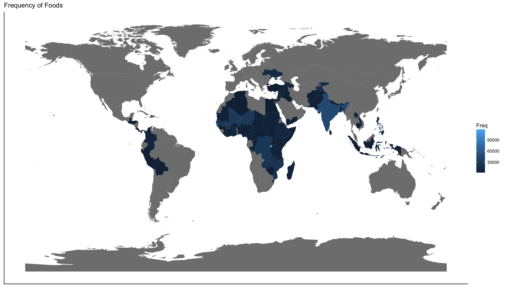

This paper analyzes international food prices looking at countries, food groups, currency, food measurements, inflation, and other data. The data for this analysis was collected by the United Nation’s World Food Programme’s vulnerability analysis and is updated monthly. The most up to date dataset can be retrieved from Humdata the exact data used in this analysis is on Dropbox, and the code is on Github.
This was my final capstone project for the Foundations of Data Science course through Springboard. The goal was to tie together all the topics that I learned through out the course. The goal of this analysis was not to implement any statistical modelling or to produce an academic explanation of food price dynamics but to show competency in important phases on the data analytics process: data acquisition, data cleaning, feature engineering, data analysis, visualization and storytelling, everything done using the R programming language and its associated libraries.
After loading the dataset into R, I realized the magnitude of the data. There are 687,253 objects of 18 variables, 74 countries, 304 different types food, and 60 currencies. With so many different objects I needed to clean the data before I started my analysis. I kept my cleaning phase as broad as possible by retaining as many objects as possible.
One thing to note about this data set is most of the data is from Africa thus not being an accurate representation of the international prices.

For ease of viewing, I renamed columns and removed ones that would not be useful. Originally I wrote a function for a year and month column to merge and make a date column, but I retained both year and month columns. For a country code column, I downloaded an existing data frame and performed a left join on the top, so every country had its appropriate code. This also created a region and income group column. I performed the same join to categorize food groups such as fruits, meat, and bread. I found some entries were not food such as fuel and manual labor. I left them in but grouped them as “Not Food.” The hardest part of the cleaning was unifying the price because I had 60 unique currencies over the last two decades. Not only was the exchange rate a factor, so was inflation and deflation. To overcome this, I downloaded a data set of Purchasing Power Parities (PPP) conversion factors from the World Bank. This accounted for both inflation and exchange rate. Once I had the PPP data set, I wrote a function to match every country and year with its appropriate PPP factor. Once I had a column with PPP factor, I then calculated a unified price column by dividing the original price by the new PPP factor column. Unfortunately, the PPP data set did not have a PPP factor for every country and every year, so these entries were deleted.
I thought my analysis could begin, but I next had to unify the unit of measurement column first. Foods were measured differently in kilograms, grams, pounds, gallons, milliliters, liters and even Haitian marmite and Argentinian cuartilla. I converted everything to gram or liter measurement units. I divided the unified price by units to calculate a price per one unit column.
To narrow my focus, I looked at the most common foods. This revealed that the top 10 most common foods in order were maize, millet, sorghum, rice (imported), rice, maize (white), rice (local), wheat, sugar and wheat flour. I had a substantial amount of entries, but I wanted to unify all types of the same food. I regrouped the foods to be more specific. I still had more values in my top ten, so I decided to focus on foods with over 25,000 entries. I finally had five foods: Rice, Maize, Sorghum, Beans, and Millet. I did not rename them because I wanted to be able to distinguish between local and imported foods.
I grouped the top five foods into five data frames, and the first thing I tried was plot a line chart and noticed something strange. It was not a traditional line graph, so I investigated my data and realized that for some countries I only had the national average and others I had multiple markets. This meant I had multiple prices for the same day that would not graph properly.
I went back to cleaning to write a function that would group and calculate the national average for each of the countries. Note this is not a true representation of a national average because I assumed that all the markets are weighted equally which, in reality, is not true. I additionally wrote a function to calculate import vs. local, regional and global averages.